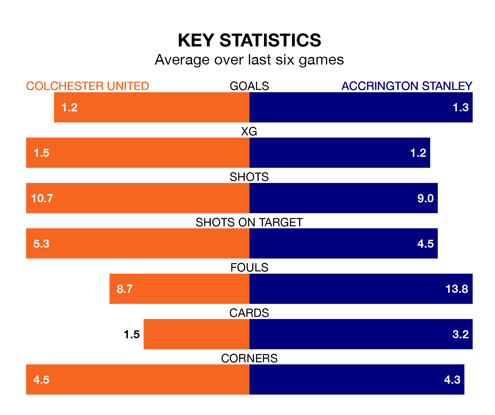

Colchester United host Accrington Stanley on Saturday at the JobServe Community Stadium in EFL League Two.
In their last league match, on February 10, Colchester lost to Harrogate Town 1-0 away.
Accrington won, 2-0 at home against AFC Wimbledon on Tuesday, with Benjamin Woods and Jack Nolan on the scoresheet.
Colchester are 22nd in the table after 31 games, of which they have won eight and drawn five, earning 29 points.
Accrington are 10 places ahead of United in 12th, with 13 wins and six draws putting them on 45 points.
In the last 10 years, Colchester and Accrington have played each other on six occasions. Colchester won one of them and Accrington the other.
On average, the U's scored 0.7 goals and Accrington 1.5 in those matches.
Their last meeting was on October 28, when Colchester won 1-0 away.
With 42 goals in 31 games so far this season, the U's are scoring at below the league average rate with 1.4 goals per game. And they are conceding more than average, letting in 59 goals at a rate of 1.9 per game.
Stanley, meanwhile, are average scorers, with 1.5 goals per game. They have conceded 1.3 goals per game.
The home side are in disappointing form in EFL League Two, with one win and three draws from their last six games.
With three wins and a draw over that period, the visitors' form is better – they have taken 10 points from 18, compared to Colchester's six.
Saturday's match will be refereed by Jeremy Simpson, who is taking charge of his first EFL League Two game this season.
He is yet to oversee a match featuring either Colchester or Accrington this season.
Updated: 13:04 (UTC), 16/02/24